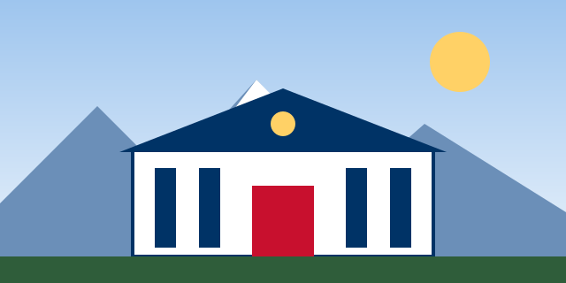

Entidad de banca estatal
Sostenemos el pago del Perú que trabaja
Procesamos la planilla de las entidades del Estado y entregamos los programas sociales del Gobierno a través de la red de agencias con mayor alcance del país. Todos los meses, millones de servidores públicos y beneficiarios reciben su pago a través de BPS.

Trámites disponibles
Cada trámite tiene un código de procedimiento (TUPA) asignado por la entidad, visible en la constancia que se entrega al finalizar la atención.
-
T-101
Pago de sueldos del sector público
Acreditación y cobro de haberes de planillas de entidades estatales adscritas a BPS.
-
T-114
Desembolso de programas sociales
Cobro de bonos y subsidios del Estado en ventanilla o cajero, sin costo de mantenimiento.
-
T-208
Cita en agencia
Reserva de horario de atención preferente para trámites de alto volumen documentario.
-
T-330
Reclamos y seguimiento
Registro de incidencias sobre pagos no acreditados, cobros indebidos o atención en agencia.
Red de agencias por región
-
Lima Metropolitana
412 agencias
-
Costa norte y sur
486 agencias
-
Sierra
661 agencias
-
Selva
291 agencias